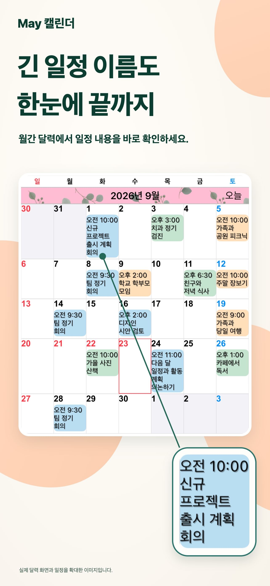
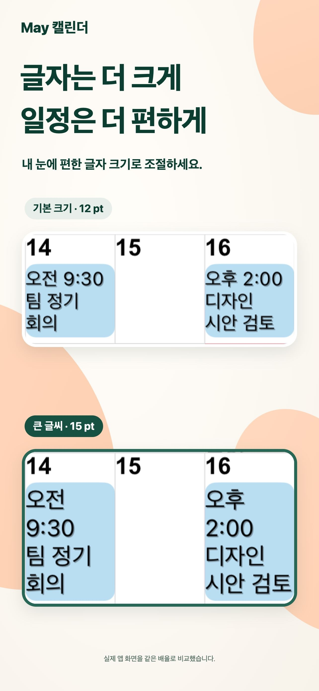
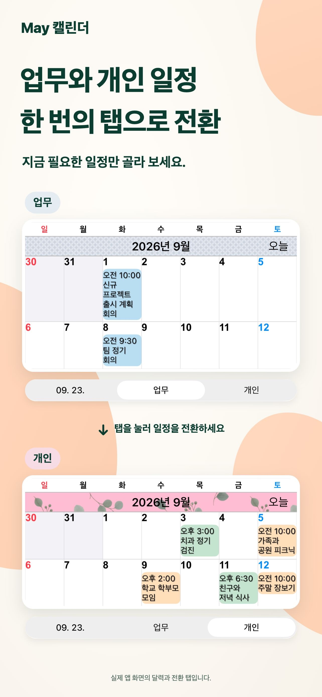
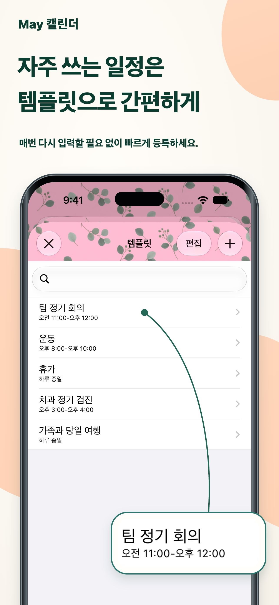

내 취향의 디자인.
테마 색상과 일정 배경, 무늬를 조합해 나만의 캘린더를 만드세요.
매일 더 편하게 확인하세요.
긴 일정 이름도 월간 보기 그대로. 글자와 색상을 나에게 맞춰, 매일의 일정을 한눈에 확인하세요.
iPhone 및 iPad용App Store에서 보기무료 다운로드 · 앱 내 구입

일정을 살펴보는 시간이 조금 더 편해집니다.
업무와 일상, 나의 하루를 한곳에서.매일의 일상을 위해
나의 계획 방식에 맞게 캘린더를 조정하세요.
긴 일정 이름을 여러 줄로 표시합니다. 글꼴과 글자 크기를 조정해 한 달 전체를 보면서 일정 내용도 확인할 수 있어요.

표시할 캘린더 조합을 저장하세요. 업무와 개인 일정을 한 번의 탭으로 전환할 수 있습니다.

회의, 운동, 병원 예약을 템플릿으로 저장하세요. 날짜를 두 번 탭한 뒤 템플릿을 선택하면 일정이 추가됩니다.

작은 차이가 만드는 편리함
테마 색상과 일정 배경, 무늬를 조합해 나만의 캘린더를 만드세요.
20종류의 위젯 중에서 선택하세요. iPad 전용 위젯도 제공됩니다.
입력한 글자와 일치하는 일정만 표시해 원하는 일정에 집중할 수 있습니다.
자주 묻는 질문
무료로 다운로드할 수 있으며 앱 내 구입이 있습니다. 현재 가격과 구입 항목은 App Store에서 확인하세요. App Store에서 보기
iPhone과 iPad를 지원합니다. 일부 위젯은 iPad 전용입니다. 최신 운영체제 요구 사항은 App Store에서 확인하세요.
미리 알림, 공휴일, 주 번호, 음력 정보 표시를 지원합니다. 한 주의 시작 요일과 시간대도 설정할 수 있습니다.
알림은 Apple의 캘린더 앱에서 전달됩니다. 일정 시작 전뿐 아니라 종료 전에도 알림을 설정할 수 있습니다.
더 편하게 보는 하루
나에게 딱 맞는 캘린더를 오늘 시작하세요.